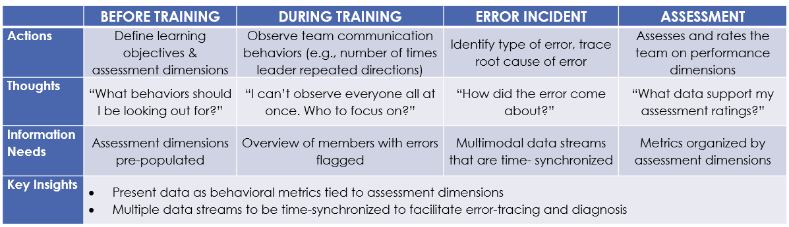

Training instructors were responsible for evaluating hundreds of teams over time, with each team consisting of 7–9 members.
Large volumes of multimodal behavioral and performance data were collected during training activities, including communications, movement patterns, attention indicators, and performance outcomes.
The challenge was not simply displaying data. Instructors needed to understand why performance issues occurred and diagnose underlying causes.
Understanding Instructor Decision-Making
I conducted multiple focus groups, thematic analysis, persona development, and journey mapping to understand instructor workflows, information needs, and decision-making processes.

Key Finding: Instructors Needed Explanations, Not Just Data
Research revealed that instructors were less interested in viewing individual data streams than understanding the causes of performance problems.
For example, location data might show that team members were out of position, but communication data was often required to understand why the issue occurred.
This led to a key requirement: instructors needed the view multiple data streams on a common timeline to support diagnosis and root-cause analysis.
Translating Evaluation Criteria into Behavioral Measures
One challenge was that instructors evaluated concepts such as communication, coordination, and leadership, but these dimensions were difficult to measure directly.
To bridge this gap, I developed a measurement framework that translated evaluation dimensions into observable behaviors and metrics.
Data Integration and Trust
The platform relied on multiple data sources collected from different sensors and systems. To support diagnosis, these data streams needed to be accurately synchronized on a common timeline.
Even small timing discrepancies could lead instructors to draw incorrect conclusions about the relationship between behaviors and outcomes.
Working closely with engineers, I identified critical points in the data pipeline where synchronization and integration errors could occur and recommended validation checks to verify data quality before integration.
These recommendations were estimated to improve data accuracy by 20–30%.
Impact
Defined information requirements for instructor workflows
Developed a behavioral measurement framework
Influenced visualization concepts and information architecture
Supported root-cause analysis through synchronized multimodal data views
Improved confidence in integrated data through validation recommendations
Established a scalable foundation capable of supporting hundreds of instructors